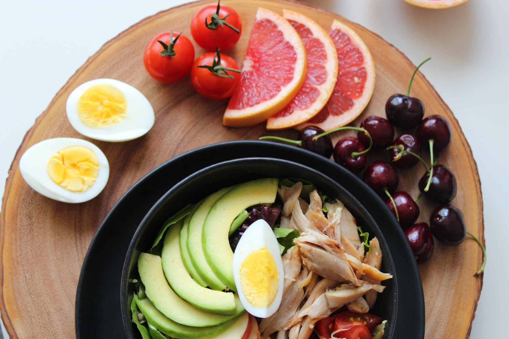

Healthy eating means eating a variety of foods that give you the
nutrients you need to maintain your health, feel good, and have energy.
These nutrients include protein, carbohydrates, fat, water, vitamins,
and minerals.
USDA guidelines
USDA guidelines recommend 3 to 4 ounces or more of whole grains
per day for women (3 to 5 ounces for men). Whole grains still have
the bran and the germ (the core of the grain kernel) attached and
have more fiber, minerals, and vitamins than refined grains. The
refining process removes the bran and germ from the grain.
Protein foods
Meat is a good source of the protein and fatty acids you need for
energy and health. Red meat also contains iron, which is
especially important for women. USDA guidelines recommend eating 7
ounces of protein foods per day. If you do eat meat, poultry, or
fish, try to choose lean cuts and opt for chicken or fish most of
the time.
A diet rich
A diet rich in fruits and vegetables is recommended by cancer
experts as well as registered dietitians. The American Cancer
Society and the American Institute for Cancer Research recommend
eating 5 or more servings of a variety of vegetables and fruits
each day to ensure that your cancer risk is as low as it can be.
Fats and oils
Fats and oils You need some fat in your diet, but not very much.
The USDA guidelines recommend consuming about 30 grams of fat per
day. The guidelines also recommend that you get no more than 10%
of your daily calories from saturated fat.

Simple to use it
1
Fats and oils You need some fat in your diet, but not very much.
The USDA guidelines recommend consuming about 30
2
Fats and oils You need some fat in your diet, but not very much.
The USDA guidelines recommend consuming about 30
3
Fats and oils You need some fat in your diet, but not very much.
The USDA guidelines recommend consuming about 30
we are currently in these cities
london
1000+ happy customers
1000+ happy customers
1000+ happy customers
san francico
1000+ happy customers
1000+ happy customers
1000+ happy customers
frace
1000+ happy customers
1000+ happy customers
1000+ happy customers
italy
1000+ happy customers
1000+ happy customers
1000+ happy customers
Our customers can't eat anywhere without us
Eat the right amount of calories for how active you are, so that
you balance the energy you consume with the energy you use. If
you eat or drink too much, you'll put on weight. If you eat and
drink too little, you'll lose weight.
Fish is a good source of protein and contains many vitamins and
minerals. Aim to eat at least two portions of fish a week,
including at least one portion of oily fish. Oily fish contains
omega-3 fats, which may help to prevent heart disease.
Most of us should eat more starchy foods: try to include at
least one starchy food with each main meal. Some people think
starchy foods are fattening, but gram for gram the carbohydrate
they contain provides fewer than half the calories.